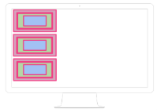
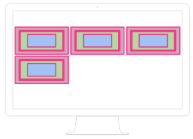

Un conjunto de reglas CSS consta de un selector y un bloque de declaración:

En el siguiente ejemplo todos los elementos <p> estarán centrados
Los elementos en bloque son elementos que, independientemente de la anchura que tengan se separan verticalmente de los elementos anteriores y posteriores.
Es como si "provocaran" un salto de línea antes y uno después (figuradamente hablando).
En cambio, los elementos en línea se van sucediendo a lo largo de la misma línea, mientras caben, uno detras de otro y de izquierda a derecha (al menos en nuestro idioma). Cuando no caben pasan a la línea siguiente. Digamos que "fluyen" dependiendo de la anchura de la pantalla de nuestro navegador
 